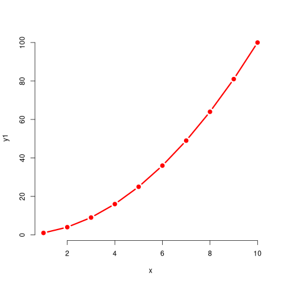
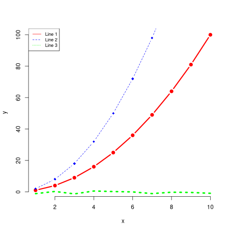
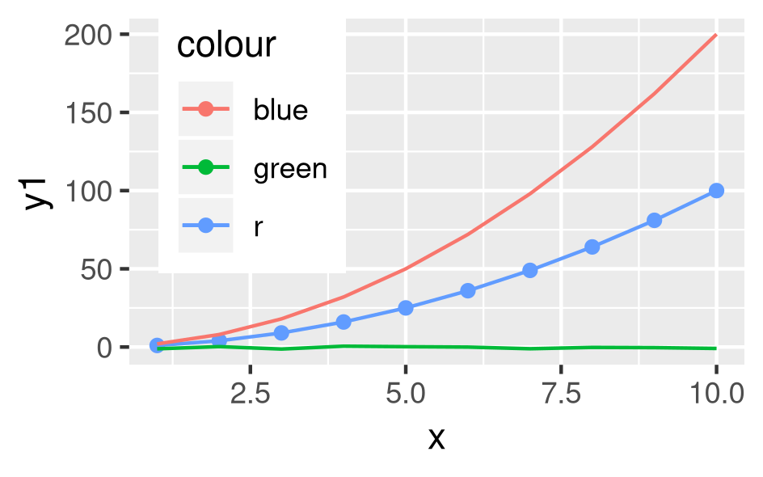
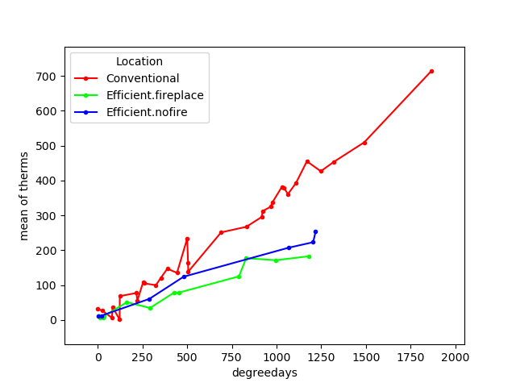
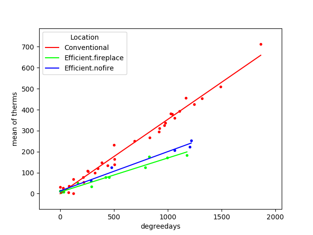

Introduction to Computing for Psychology Students
Table of Contents
- 1. Course Goal:
- 2. Learning Objectives:
- 3. Course Mechanics
- 4. Outline
- 4.1. Session 1 Installing Linux
- 4.2. Session 2 Command Line Basics and EMACS Introduction
- 4.3. Session 3 Version Control Github and Beginning With Python
- 4.4. Session 4 Python
- 4.5. Session 5 R
- 4.6. Session 6 Data Handling
- 4.7. Session 7 Plotting in Python and R
- 4.8. Session 8 Programming Experiments
- 4.9. Session 9 Report Writing
- 4.10. Session 10 Coding the Experiment
- 4.11. Session 11 Collecting the Data
- 4.12. Session 12 Presentations
- 4.13. Instructions for Burning Xubuntu to USB
- 4.14. Interesting Programs
1 Course Goal:
Improve your ability to use your computer as a tool for academic activities.
This leads to the following learning objectives
2 Learning Objectives:
- Learn how to install software.
- Learn how to work from the command line.
- Learn the rudiments of programming sufficient to allow further progress through self study.
- Learn about the use of libraries to enable programming psychological experiments.
- Learn how to use version control
- Learn how to write papers that blend code and analyses to generate reproducible research reports.
This includes learning
- how to use citation databases
- generate graphics of analyses
- conduct statistical analyses
- generate multiple output formats from a single source file.
3 Course Mechanics
To meet the learning objectives you will need to do more than you listen or observe. You will also need to break old habits. That means in the beginning it will be harder to do simple things. It also means that in the future things that used to be impossible for you to do will now be possible (but they may still not be easy). Combining computer skills with with your psychology content knowledge makes you more attractive to employers and on a graduate school application.
Thus, this course will require you to use the Linux operating system (the XUbuntu flavor) and tools available within that space. Later on, after this course, if you wish to return to the world of OSX and Windows10 you will know what you are looking for, and you will have the skills necessary to make it available.
4 Outline
4.1 Session 1 Installing Linux
4.1.1 Instructions for testing the Live CD and installing to USB
- Learn how to boot your computer from a USB.
- Mac OSX - start the computer with option key held down
- Windows - may require going into the bios and enable booting usb (usually some key combo of F2 or F10 during the boot process - look for a very briefly flashed screen); followed by rebooting with a different F Key. Another option is to tell Windows to boot from recovery mode. Find the "advanced" menu of the Windows Start Up menu (look in the "recovery" section of the start-up). Select from "another device". Some devices, like Surfaces, have other key combinations.
- Other systems: chrome books; ipads; probably won't work.
- Sometimes it takes a while to figure out which of the options is the Xubuntu option. If one doesn't work, just note what it was and next time try a different one.
- Run an XUbuntu Live CD If problems starting the use without installing option, restart, select install, and then quit from the first screen. That will usually drop you into what you need.
- Explore the Live USB
- Connect to the wifi.
- Click up/down arrow in upper right corner of screen.
- Select the correct options (to be demonstrated).
- Authentication: PEAP
- Click box no certificate required
- Use your full watiam address (including the stuff after @ sign usually).
- Verify working by opening Firefox Web Browser
- Click little icon upper left.
- From dropdown menu select Web Browser.
- Go to https://uwaterloo.ca
- Explore some of the other programs available in the dropdown menu and under the different headings.
- Which program is like Word for Windows?
- How do you take a screenshot?
- What is the standard email program on this version of Linux?
- Installing programs
There is a "gui" installer, but we are going to use the package management system from the command line.
- Open the terminal emulator
- type
sudo apt updateWhat does sudo mean? - Do NOT upgrade your old packages at this point.
- type
sudo apt install emacs; accept the defaults - Leave the terminal open but drag over to the menu in the upper left corner and inspect the Development folder. You should emacs in there. Do not click it. We are going to launch from the command line.
- Back in terminal type:
emacs &. What does the ampersand do? It lets things run in the background without freezing the terminal. If you don't know what I mean, then start without the ampersand, and then try to type another command in the terminal. Remember: if you don't know what will happen? Try it (after maybe backing up important files). - Go to the emacs help menu and under the drop down options pick emacs psychotherapist. Remember it is here when you need some counselling in the first few sessions of this course.
- Connect to the wifi.
- Syllabus review (short break).
- Problems with the live "CD". Nothing is permanent. All your upgrades and installations vanish everytime you turn it off and you would have to do it all over again everytime you restart. So, I want you to install Xubuntu so that any changes you make will be persistent, but since I don't want to require you to alter your personnel machine, will will install it to a usb and you will then run your computer from this new, second, usb where the changes you make will persist.
Install Linux XUbuntu to a second USB This will be the major goal of the rest of our session. Follow the prompts on the screen. Work together. Ask questions.
Where you need to be careful
When you install software you need to make sure that install it to the usb and not the hard drive on the computer. Also, beware the boot loader. This is the program that helps your computer start and chooses an operating system. If you install it in the wrong place you may not be able to boot your Xubuntu installation or you may need the live disc to boot your non-linux installation. If you go slow and are careful the risk of either of these events is small.
For more detailed instructions go to the section Instructions for Burning Xubuntu to a USB
- When you think you are done, shut things down. Remove the live USB/CD, but leave the other one in place. Follow the steps you need to to boot your computer from a USB. If you are able to launch Ubuntu (and it might take a few tries to find the right menu entry) then you will see linux start. Enjoy the feeling of immense power.
- Boot your computer from the new USB and install emacs from the command line again.
- The command line - open up a "terminal". Your terminal will be running a "shell."
- Package Managers
- The ubuntu package manager
Basic commands:
- apt update
- apt install
- apt search
- apt remove
- The ubuntu package manager
Basic commands:
- This time you might want to update those old programs.
4.1.2 Troubleshooting
- I don't have a USB port?
- Do you have an sdcard port? Yes? You can use that. If you have neither you will need a different computer. It can be a cheap (as in the price of textbook cheap) and old one.
- I only have one USB port.
Can you work with a neighbor to repeat the installation instructions on a second USB that you can use on your machine? If not, you may need something like this.

Figure 1: USB Port Expander
- Can I just install Linux on my computer?
- You certainly can, and you can even keep you "old" operating system and use one or the other as you choose. But this seemed more than I could require of all students, but I encourage you to do it if you are willing. First, back up everything because trying this and getting it wrong could cause you to lose all your saved information.
- I already use Linux.
- Good for you. Help a classmate.
- What is Linux?
- Check wikipedia.
- Why use Xubuntu?
- Is it different from Ubuntu (Debian, Arch, Fedora, OpenSuse…)? Linux is a kernel that powers the system. All the rest are different choices people make of the tools they want to wrap around that "engine." XUbuntu is a reasonably light-weight linux distribution that runs well on slow machines, and yet has enough of a user base to make it reasonably easy to find help on line.
4.1.3 Homework
- Send me a screenshot of emacs open and running on your laptop. Hints: look for xfce4-screenshooter to take the screenshot. Log on to Learn while running linux. Of course that will require you to connect to the internet, and that will require you repeating those steps to configure the connection.
Look at the available software applications and download one (1). Don't go crazy on this. You are running your whole computer from a small usb, it will already be slow, and you will already be limited for space. Just find one program (look for "software" in the upper left corner icon drop down menu) that strikes you as cool or interesting and install it, play with it, and write a one-paragraph description of it using this format:
Save it with yourlastname-firstnamepkgname.org as the file name. Upload it to the dropbox on learn. And save it, because you will need it again soon.
Use the program "mousepad" for the above.
4.2 Session 2 Command Line Basics and EMACS Introduction
4.2.1 Command Line
- What is it?
- Why use it? One opinion.
- The Manual
- The Manual
- Find your terminal?
Why is it called the terminal?
- Operating Systems
- Windows
- CMD
- Power Shell
- WSL If you use this I recommend you install the Ubuntu version. That is the one that I know the most about from the options. Note that this will give you access to command line tools, but not to graphical tools.
- Recommended If you have windows 10 you can run linux as a virtual machine.
- OSX
- Applications/Utilities/Terminal
- Why don't you have to install a virtual machine to get linux commands on OSX?
- Linux
- probably xterm
- Windows
- Operating Systems
- Terminal Games
ls -la /home/<username>- What does all this output mean?
- What changes when you leave out the
-la? - What does the hyphen do?
- Find the location of your Desktop folder.
- Change to that directory.
cd - Find out where you are?
pwd - Find out how much free space you have on your computer disk.
df -h - How do you get help for most of these commands?
Usually
command --helpor (-h) - How do you find the manual?
man ls - Navigating
- Paths: absolute and relative.
- What do those "dots" mean?
- What do those slashes mean?
- Tab is your friend.
- Try the up arrow too.
- File ownership
- Make a text file from the command line.
touch /home/yourname/Documents/testText.txt - Who owns it?
- Make a text file from the command line.
Make a directory
mkdir /home/britt/Documents/myFirstDir/Spaces are the enemy. Never use them, but if you have to, escape (
\) them.- Want more practice? Try the tutorials here.
4.2.2 Exercises Emacs
- Emacs
- What are Control and Meta used for? What keys are they? May depend on your keyboard and operating system. Don't like what they are? Remap them.
- Tutorial
Ctrl-h t(akaC-h t) - Find the Psychotherapist - you may need it.
- Play a game - try
M-x tetris Init files and packages. Emacs has it's own package system that allows you to greatly expand its functionality. Most of those customization are set up in your
~/.emacs.d/init.elfile. Create it if it doesn't exist.You can learn more by reading the info file.
A minimal init.el to get started. And make sure your emacs package is update to the latest version.
This can be a bit tricky to get started because you will have to first install
use-packagemanually viapackage-list-packageswhere you mark it with anIand thex. Then close and restart emacs. From here on out you can add the packages to your init where you customize them and then they get downloaded as needed.(require 'package) (add-to-list 'package-archives '("melpa" ."http://melpa.org/packages/") t) (package-initialize) (use-package elpy :ensure t :init (elpy-enable)) (use-package ess :ensure t )
If you get errors about gnupg and signing signatures.
You can try this code to make sure that gnupg has the directories established that it needs and has "signed" the correct security key for emacs packages.
gpg --homedir /home/<NAMEOFYOURHOMEDIRHERE>/.emacs.d/elpa/gnupg --keyserver keyserver.ubuntu.com --recv-keys 066DAFCB81E42C40
- Program your editor
- Turn off the tool bar?
- How?
C-h-fwill allow you to search for functions. Try the keyword menu and tab and see if you come across a likely contender (menu-bar-showhide-tool-bar-menu-customize-disable). - Navigate to the scratch buffer. Put that function in parantheses. Move to the end. Type
C-x C-e. Did your tool bar go away? - Point is that you can heavily customize your editor. Don't worry too much about it for now.
- Orgmode
- What is it? About the best thing ever.
- Make an outline. Keep a calendar. Add code to your documents. Make links. Include images.
- Practice now:
Where is the help, remember?
C-h iNote bene: may need to getsudo apt install emacs25-common-non-dfsgfor all the documentation.- Learn to use the short cuts to open, save, and so on. That is one of the powers of the command line and similar style tools. Enhance your productivity and control.
- Create an outline.
- Create a link
- Insert an image
- Export as a web page.
- What would you need to export a pdf?
Try installing
texlive-latex-recommended. If that doesn't fix the problem go withtexlive-full. This is big.
4.3 Session 3 Version Control Github and Beginning With Python
4.3.1 Version Control
- Git
Not the same as Github, though that is one of the more common social uses of git for sharing and collaborating on code.
- Social Coding and Data Sharing
A brief discussion of what is going on here.
- Installation of Git
sudo apt install git - Github and Gitlab and Bitbucket and …
- Github is the big one with a large external presence.
- Sign-up
- The university provides you with a gitlab presence at https://git.uwaterloo.ca
- Github is the big one with a large external presence.
- Git
- Open a terminal
- Move (
cdordir) into your Desktop - type
git init myrepo - Should see message from the terminal prompt that it has been created.
- Feel free to delete (e.g.
rm -rf ./myrepo)
- Making and Cloning a Course Repo
- I create an empty repository on github
- I create a repository on my laptop.
- I add some small file.
- I set the upstream (origin) as the github site, and then I push.
- Now if I use a different computer I can push and pull (to be discussed) from this github site and keep everything synced together.
- Demo the Course Git Site
I am keeping back-ups of my notes for this course on github. You can get everything I create by cloning this repository.
- Go to Course Repo on Github
- Use that url to clone a copy to your laptop (or to fork a version to your github account). Occassionally
pullin any changes or updates. - You will probably find it easier to skip the fork step for any repository that you are just going to use, but not change.
- Magit
- Emacs provides you with an interface for this called magit.
- To use it you will have to create an init file (and delete ~/.emacs) Let's you discover the hidden directories.
- You will have to enable emacs package repositories (everyone in linux land has a package manager).
- You will need to install the magit package.
- Then it is
C-c morM-x magit
- Forks and Clones and Pull Requests homework
- Diagram the logic on the board.
- Get everyone to create a fork of the course repository
- Get everyone to create a local clone on their laptop
- Set a second upstream pointing to me.
- Pull from my repo to laptop.
- Update and accept the changes.
- Push this to your fork.
- Add a new file to your laptop version.
- Push this to your fork.
- From github generate a pull request for me. This is one of this weeks homeworks.
4.3.2 Beginning Python
- Python
- Test for Python in a terminal.
- open a terminal
- type
python --versionthenenter - If you see an answer you have python. Type
python. Note the cursor has changed. - type
2 + 2 enter - Do you see 4?
- type
quit()to exit. - Why do you need to have the parentheses after the word quit?
- If you only have version 2 try the command again with
python3 --version. - If you don't have python3, get it (may want the python3-dev version; often the hyphen -dev packages will work better for you as a bleeding edge user).
- Test for Python in a terminal.
- Coding - General
Coding - providing instructions to a computer. The computer only does what you tell it.
- Writing Code
Code files are just plain text. You can open and write them in anything, though some tools can make the writing substantially easier. Usually extensions identify a language (e.g. .py for python and .R for R).
- Testing Code
- Interactive
We already did a little of this, but let's try again.
def myadd(a,b): return(a+b)
print(myadd(3,4))Traceback (most recent call last): File "<stdin>", line 1, in <module> NameError: name 'myadd' is not defined
For interactive session it is like you are interacting with a user. You type your lines one or a few at a time, get an answer, and then decide what to do next.
- Script
You write a separate file that you read in, or import and use. Here is the file.
def add2(a,b): return(a+b)
def addMany(aa): ans = 0 for a in aa: ans = ans + a return(ans)
from code.testScript import * print(add2(3,4)) print(addMany([1,2,3,4,5,6]))
7 21
Try creating this file and then typing these commands in your terminal. For various weird reasons if you want the test script to be in a subdirectory of where you are working you will need a file
__init__.pyto trick python into treating it as a package. See the documentation and this stackOverflow answer.
- Interactive
- Confirming You Can Write and Run a Python File homework
- Create a file
lastname.py - Write the myadd function I demonstrated, but give it a different name.
- Save.
- Open up a terminal.
- Start a python session.
- Import your file with you function.
- Use your function.
- Take a screenshot of your terminal session showing the above session.
- Submit that for your homework along with your lastname.py file.
- Create a file
4.4 Session 4 Python
4.4.1 Types
- Integers
- 1, 2, …
- Doubles/Floats
- 10.3, pi
- Booleans
- True , False NB: some languages, e.g. R, use TRUE.
- (no term)
- Lists and Tuples
- Tuples
- (1,2), ('a',10.34,False) Have a fixed number of slots, can be different types. Define with parentheses
- Lists
- [1,2,3,4] Have a potentially infinite number of slots, but must all be same type. Define with square brackets.
- Dictionaries
- {'firstName' : 'Britt', 'lastName' : 'Anderson'}
- Comments
- Not really code, but allows you to put stuff in your programs for other users and yourself to read. In python the lines start with a hash "#"
4.4.2 Constants and Variables
A conceptual difference more than a implementation difference
NOHRSDAY = 24 x = NOHRSDAY x
24
4.4.3 Assignment and Equality
= is different from ==
a = 2 print(a == 3)
False
4.4.4 Loops
Think of recipes: "stir egg whites until peaked" or "simmer for 30 minutes". That is the intuition for a
- For
Python refers to things called "iterables." To iterate is another way of saying something you can keep doing the same thing over and over to. Imagine a bowl of ice cream. It is "eatable". You take one spoon, and keep taking spoonfuls until the bowl is empty.
- Indexing
You can get the location of an element in a list by referring to its index. Indexes start at 0 for many computer languages, but not all (e.g. R and Matlab). There are various shorthands for getting ranges of elements or the last element.
nameDict = {'firstName' : 'Britt', 'lastName' : 'Anderson'} mylist = list(range(1,10)) print(nameDict['firstName']) print(mylist) print(mylist[0]) print(mylist[-1]) print(mylist[0:4])
Britt [1, 2, 3, 4, 5, 6, 7, 8, 9] 1 9 [1, 2, 3, 4]
for ml in mylist: print(ml) for i,ml in enumerate(mylist): print("The {0}th element was {1}".format(i,ml))
1 2 3 4 5 6 7 8 9 The 0th element was 1 The 1th element was 2 The 2th element was 3 The 3th element was 4 The 4th element was 5 The 5th element was 6 The 6th element was 7 The 7th element was 8 The 8th element was 9
- For Class Exercise
- Create a list of at least 8 individual characters.
- Make sure they are not in alphabetical order
- Print the letters one at a time.
- Print the letters sorted alphabetically one at a time, but do not overwrite your original list.
- Print the letters from both lists with a format command that says which position the letter is in.
myList = list("brittAnderson") for l in myList: print(l) print("end of list 1\n") for l in sorted(myList): print(l) print("end of list 2\n") for i,l in enumerate(zip(myList,sorted(myList))): print("The {0}th letter of myList is: {1}, but is {2} in the sorted list.".format(i,l[0],l[1])) print("Thus ends the lesson")
b r i t t A n d e r s o n end of list 1 A b d e i n n o r r s t t end of list 2 The 0th letter of myList is: b, but is A in the sorted list. The 1th letter of myList is: r, but is b in the sorted list. The 2th letter of myList is: i, but is d in the sorted list. The 3th letter of myList is: t, but is e in the sorted list. The 4th letter of myList is: t, but is i in the sorted list. The 5th letter of myList is: A, but is n in the sorted list. The 6th letter of myList is: n, but is n in the sorted list. The 7th letter of myList is: d, but is o in the sorted list. The 8th letter of myList is: e, but is r in the sorted list. The 9th letter of myList is: r, but is r in the sorted list. The 10th letter of myList is: s, but is s in the sorted list. The 11th letter of myList is: o, but is t in the sorted list. The 12th letter of myList is: n, but is t in the sorted list. Thus ends the lesson
- Indexing
- While
These are like for loops in that they do stuff over and over, but unlike for loops they do things indefinitely, until that is, you tell them to stop. How do you do that? You use a predicate that they test for each time through the loop. That means you need to specify a predicate.
- Conditionals
This is where you test whether something is or is not
True. Note that Python, but not all computer languages, treats 0 as the same as False, and all non-zero values as True.if (2 == 3): print("Wha.....?\n\n") elif (3 == 2): print("Now that is odd") else: print("2 does not equal 3.")
- While
NB: note the use of colon (:) at the end of the
forandwhilelines.i = 0 while (i<=10): print("brittAnderson"[i]) i = i+1
b r i t t A n d e r s
- Conditionals
4.4.5 Functions
You have seen an example of this before. Think of a function as a machine that grinds meat. You pour in a cow. You get out hamburger. Input. Output. Note that arguments are "local". They are not referring to variables outside, in the program globally, but only make sense locally in the function. You drop values into those slots, and they you can use those names in your function, because until you use it, your function doesn't know what it will be getting.
def myadd(x,y): return(x+y)
myadd(2,3)
5
- Class Exercise with Functions homework
- Hangman Game
You will be required to turn this in, but you can get started now.
- Look up how to get user input from python on the command line.
- Write a script that implements elements of the hangman game.
- Your script should ask for guesses for letters in the word.
- Give an update on the letters guessed and the missing spaces
- Track that guesses have not exceeded max
- Report if one or lost.
- I will give some hints and examples in class to start us off.
- Hangman Game
4.4.6 Libraries classdiscussion
Lots of people use python. If you can think that someone ought to have done … they probably have. Use libraries whenever you can, because … discussion points.
- What are some popular libraries? classactivity homework
Here are 20 recommended ones.
Of particular note for us are:
- Numpy
- Scipy
- Matplotlib
- Pillow
- Sympy
Divide class into small groups. Assign a library. Have them present to us what it is good for, and maybe a short demo.
Homework: Submit a short .py script to the class github repo that demonstrates the importation of your library and some basic use.
4.4.7 Programs
Nothing else really, but the more prolonged and complicated concatenation of the above.
4.4.8 Debugging and Basic Working Methods
The most basic is just to print statements into your code so that you can see what happening and whether your variables are actually what you think they should be.
4.4.9 IDEs
What does IDE stand for?
What are common IDEs for python and how do you get them. What are they good for.
Two popular ones are:
- Spyder
- pyCharm
This is what you need to use for this course: emacs.
- Open up a blank file with a name that ends in .py
- Type in some lines (e.g. a = 2, b = 3, print(a+b))
- Type C-c C-c on the first line.
- Read the error message
- Fix it.
- Keep C-c C-c'ing on each line and look at what is happening in your console.
- When your cursor is on a python word, like
print, look in the mode line. - Try M-x linum-mode
- To see some fancier stuff install the
elpypackage for emacs.- M-x package-list-packages
- C-s elpy
- type "i"
- type "x"
- An easier way to get and maintain your emacs package is "use-package". See some instructions here.
- When you try
(elpy-enable)you will get error messages. Why? You don't have all the dependencies. - Uninstall elpy (go to that list and hit 'd' on the elpy package).
- Follow instructions here to see what python packages you need and install them.
What no pip? Welcome to the world of using your computer (and dependency hell).
sudo apt install python-pip pip install jedi rope flake8 autopep8 yapf black
- Then reinstall elpy. Whoooo - wipes brow.
No! Needs to be for python3. Repeat all the above for python3 and then customize your emacs python shell command like this
M-x customize-variable python-shell-interpreter
- Check out the elpy documentation. Lots of cool features to make your programming easier.
Why do you have to do all this? Because Mama a'int spoon feeding you anymore boys and girls.
4.4.10 Pip to Install Libraries and Virtual Environments
- Pip
pip is the python install package program. There have been many ways to install python packages over the years and you will find a lot of tracks on the internet. There is a new system coming called wheel, but for now stick with pip (ubuntu also has many of these packages, but I find it better to try and not to mix package managers. Use your choice; mine is pip.
- Virtual Environments
You have system installations of things (like python and its libraries). Now you need to install something new for development purposes. You don't want different version of the same program clashing. The solution is to install your development version of libraries in a "virtual" environment. That is you trick your machine into thinking that a different directory is the root of everything, and thus it can install locally without disturbing your other system files. There are various subtle variations of this arrangement that may be important for different scenarios and use cases. There is also more than one virtual environment tool out there. We will be using and testing the built-in one.
- TODO VENV
- Link to the python description page
- Creating a venv and downloading Psychopy (to be used later in the course).
- First create a directory where you will store/keep your psychopy installation. Maybe something like:
mkdir /home/britt/research/psychopy/ - change to that directory
- make sure you have installed the venv module. For our XUbuntu version that is
sudo apt install python3-venv python3 -m venv /home/britt/research/psychopyNote this is just the name of my directory. Yours will be named differently.- Then you "activate" this virtual environment for the correct installation.
source /home/britt/research/psychopy/bin/activate - Note the change in the prompt from your terminal
- Now try to install psychopy with
pip install psychopy - This will pull in a lot of files. Be patient.
- We will need (according to the psychopy download page wxPython [a library for making gui's]).
- Install pygame (inside the virtualenv with pip)
- Then edit the file <venv>/lib/python/site-packages/psychopy/demos/coder/stimuli/facejpg.py to add ",winType = 'pygame')" to the function that creates the window.
- The run python <path>/facejpg.py NB: I am having trouble getting pyglet windows to work, but pygame seems fine. (pip uninstall pyglet; then pip install pyglet==1.3)
- For an exercise, have them get cheese and change out the picture to use their own face? Maybe use gimp or inkscape to select the face and make rest transparent? TODO
- First create a directory where you will store/keep your psychopy installation. Maybe something like:
- TODO VENV
4.5 Session 5 R
4.5.1 R
- Test for R from a terminal.
- open terminal
- type
rthenenter - type
2 + 2 enter - Do you see 4?
- type
quit()to exit.
- Test for R in Emacs
M-x R- if this doesn't work install
ESSfor emacs (Emacs Speaks Statistics)
4.5.2 Getting R
How might you do it?
sudo apt install r-base-core
This is a pretty large download with a lot of dependencies. It make take a while.
4.5.3 R Coding Basics - compare
4.5.4 Types
R has many of the same types, but also makes much greater use of lists where there are names and elements (rather like a python dictionary). Many built-in statistical functions will return S3 or S4 objects. The point isn't to know what they are, as to know that there are special types in R that have special handling in R.
a = 1 typeof(a)
double
tpl = c(1,2) lst = list("firstName" = 'Britt', "lastName" = 'Anderson') df = data.frame('fn' = c("bob","jane","griffin"),"gndr" = c('m','f','o')) df
You can think of data.frames as sort of like spread sheets. But they are much handier. For example:
4.5.5 Data Selection in R classactivity
- Open up Emacs.
- Type
M-x R - You should see an R environment appear.
- Try it with
2+2followed by <enter>. - Now type
cars. Is
carsa data.frame?is.data.frame(cars)
How many cars are there that can go faster than 10, but not more than 20?
length(cars$dist[cars$speed > 10 & cars$speed < 20])
- Can you do that easily in Excel?
- Questions for you to explore:
- Sort (or
order) cars by thedistvariable. - Find the mean and standard deviation of the speed of the cars.
Are there other datasets?
library(help="datasets")
- Open any of the datasets that catches your eye.
- What are the column names?
- How many rows?
- What is the comment designator for R?
- What is the ending extension of an R script?
- Sort (or
4.5.6 Assignment and Equality
= is different from ==
a = 2 print(a == 3)
[1] FALSE
While some things are the same, not all the language features are identical. You can use your knowledge of one language to help you make guesses in the other, but you cannot count on the notation and syntax being identical.
4.5.7 Loops
This is a good example of where things are slightly different
- For
ml = seq(1:10) for (m in ml) { print(ml) }
[1] 1 2 3 4 5 6 7 8 9 10 [1] 1 2 3 4 5 6 7 8 9 10 [1] 1 2 3 4 5 6 7 8 9 10 [1] 1 2 3 4 5 6 7 8 9 10 [1] 1 2 3 4 5 6 7 8 9 10 [1] 1 2 3 4 5 6 7 8 9 10 [1] 1 2 3 4 5 6 7 8 9 10 [1] 1 2 3 4 5 6 7 8 9 10 [1] 1 2 3 4 5 6 7 8 9 10 [1] 1 2 3 4 5 6 7 8 9 10
- Exercise:
Change the above so that it prints on the individual number each time it goes through the loop.
- For Class Exercise
We will repeat the same exercise we did in Python, but using R this time.
- Create a list of at least 8 individual characters.
- Make sure they are not in alphabetical order
- Print the letters one at a time.
- Print the letters sorted alphabetically one at a time, but do not overwrite your original list.
- Print the letters from both lists with a format command that says which position the letter is in. String formatting is less nice in R. Check out
pasteandsprintf. For help try?<commandname>.
myName = "brittAnderson" myList = unlist(strsplit(b,"")) for (l in myList){ print(l) } for (l in myList[order(myList)]){ print(l) } i = 1 for (n in order(myList)){ t <- sprintf("The %.0fth letter of myList is: %s, but is %s in the sorted list.",i,myList[i],myList[n]) print(t) i = i+1 }
Error in strsplit(b, "") : object 'b' not found Error in myList : object 'myList' not found Error in myList : object 'myList' not found Error in order(myList) : object 'myList' not found
- Exercise:
- While
- Conditionals
if (2 == 3) { print("Wha.....?\n\n") } else if (3 == 2) { print("Now that is odd") } else { print("2 does not equal 3.") }
- While (again)
i = 0 while (i<=10) { print(unlist(strsplit("brittAnderson",""))[i]) i = i+1 }
character(0) [1] "b" [1] "r" [1] "i" [1] "t" [1] "t" [1] "A" [1] "n" [1] "d" [1] "e" [1] "r"
- Conditionals
4.5.8 Functions
myadd <- function(x,y) { return(x+y) }
myadd(2,3)
[1] 5
- Class Exercise with Functions homework
You will be required to turn this in, but you can get started now.
- Look up how to get user input from python on the command line.
- Write a script that I will run on the command line with R.
- Your script should ask me to enter a word.
- It will then print out the word.
- Print out the sorted version one character at a time.
- Ask me if I want to do it again (y/n). If 'y', repeat, and continue repeating until I answer 'n'.
- If you want to try and rewrite your hangman program from earlier in R, that is quite acceptable too. The goal is to get your trying to write something in R.
4.5.9 Libraries for R:classdiscussion:
install.packages("data.table") install.packages("ggplot2") library(data.table) library(ggplot2)
- What are some popular libraries? classactivity homework
Here are 20 recommended ones.
Of particular note for us are:
- knitr
- ggplot2
- data.table
- magrittr
- devtools/githubinstall
Divide class into small groups. Assign a library. Have them present to us what it is good for, and maybe a short demo.
Homework: Submit a short .R script to the class github repo that demonstrates the importation of your library and some basic use.
4.5.10 Programs
Nothing else really, but the more prolonged and complicated concatenation of the above.
4.5.11 Debugging and Basic Working Methods
The most basic is just to print statements into your code so that you can see what happening and whether your variables are actually what you think they should be.
4.5.12 IDEs
- Vanilla Emacs
- Open up a blank file with a name that ends in .R
- Type in some lines (e.g. a = 2, b = 3, print(a+b))
- Type C-c C-c on the first line.
- Read the error message
- Fix it.
- Keep C-c C-c'ing on each line and look at what is happening in your console.
- An easier way to get and maintain your emacs package is "use-package". See some instructions here.
- Babel Mode
- Open a file with the name <something>.org
- Type in some text
Open a source block
#+begin_src R a = 2 b = 3 print(a+b) #+end_src
- Type
C-c C-e h h. That is four different key presses. - You just generated a web page. View it in your browser.
- Now combine it with python by adding another source block below that uses the python language.
- For help google emacs orgmode babel
- Install RStudio classactivity
Basic Steps:
- Update your repository
- Install R base
- Use wget to install the .deb package for our version of Ubuntu from the RStudio downloads page.
- run
sudo dpkg -i <PACKAGENAME> - try launching
rstudio
Why use RStudio instead of Emacs (or anything else)?
One reason is the fact that it is becoming quite common so it mostly works out of the box.
A downside is that out-of-the-box performance comes with a loss of flexibility and adapatability on your part and a bias to the authors' choices of preferred packages. You also return to the "gui" click an icon usage. These are two habits you are trying to break.
4.6 Session 6 Data Handling
4.6.1 Data handling in R
- Getting your data into R classdiscussion
- First get some data.
If you do not have your own data from a prior project you can get some from here (what follows use the HSQ dataset):
https://openpsychometrics.org/_rawdata/
- You have just downloaded a zip file. Now what?
- Unzip it.
- First option (command line): navigate to your download directory and then use command
unzip - Second option (emacs): navigate to your download directory (
C-x d) and then put cursor on file and typeZ.
- First option (command line): navigate to your download directory and then use command
- What is csv? How does it differ from Excel (xlsx)? Which is better? What about SPSS, SAS …
R uses a
readcommand with many variants. There are extra libraries for other formats. Here we focus on csv. I downloaded the HSQ dataset.d <- read.csv("./HSQ/HSQ/data.csv")
- Reading is different from
load. How? Check the help. - Note the assignment to a variable for the reading?
- What are the optional arguments to
read.csvand why would you use them. - Explore the data?
- Use
ls()to see the list of names of variables in your "workspace." - Use
names(d)(the d is the name of your variable of interest) to see the column names? - How would you find out the number of rows?
- Display the first and third rows.
- Do the same but limit to the age and gender columns.
How many participants of each gender? I am using data.frame format here.
with(d,tapply(age,gender,length))
5 581 477 8 - Why do we have four rows?
Always inspect your data
unique(d$gender)
2 1 3 0 - What do these mean? Inspect the codebook file. 3 is other and 0 not mentioned. Probably means no entry.
Limit your data to only self-declared men and women. Make a new data frame with just these rows. It should be 1058.
dmf <- d[d$gender %in% c(1,2),] print(nrow(dmf))
1058
- Use
- First get some data.
If you do not have your own data from a prior project you can get some from here (what follows use the HSQ dataset):
https://openpsychometrics.org/_rawdata/
- Class Exercise to Work with the Data
Come up with some exercises for class exploration
4.6.2 Data handling in Python
- Pandas
This is becoming the defacto R equivalent for Python. There are definitely libraries for reading and writing plain csv files, but they are becoming used less and less.
- Getting Your Data Into Python
You have to import pandas to use it.
import pandas as pd dpd = pd.read_csv("./HSQ/HSQ/data.csv") dpd.columns.values
- Repeat the same inquiries as above, but with Pandas.
len(dpd['Q1'])
dpdmg = dpd.copy() dpdmg = dpdmg[dpdmg['gender'].isin([1,2])] len(dpdmg['Q1'])
What happens if you just select with
in? You keep the same number of rows, because you replace the ineligible data with NaNs (not a number). - Functional Styles versus Object Orientation
Python is an object oriented language. Pandas creates a data.frame object (intended to mimic R), but it is not the same thing, and while most of the commands are achievable in either, they are not the same. The dot shows you we are accessing either an attribute or a method of an object.
- Getting Your Data Into Python
4.7 Session 7 Plotting in Python and R
4.7.1 General
Comment. While it is possible to do almost anything that you can do in one language in the other, some sorts of plots may be easier to produce in one than the other. In general, you are better using the language you know best, even if the library that you need is a bit complex. On the other hand, don't be a mono-programmer. If there is a great library that does exactly what you want in a new language, or one you know less well, consider learning enough to use it. Have a "get the job done" attitude rather than focusing on mastery. Too much changes too fast in this world for you to get too settled on any one language or approach.
4.7.2 R
Base plot and ggplot are the two most common R libraries for plotting with ggplot seeming to have much of the current momentum. They have two different models behind them, one may fit your thinking better than the other. Use the one that seems to make most sense to you. But for today you will have to use them all.
- Create some variables that you will use.
x <- 1:10 y1 <- x^2 y2 <- 2*y1 y3 <- rnorm(10)
- Base Plot
The two main commands you will use are
plotandlines. Be careful. There is a commandline(no 's'). That is not what you will want here.plot(x,y1)

- Changing the look of base plot
You have multiple hidden arguments you can use to change the look of the plot such as the symbols, whether it plots lines or dots, the color, the font size. Always remember to try the help command. Here is just one example.
plot(x,y1,type = 'b', frame = F, pch = 19, col = "red" , ylabel = "y", lty = 1, lwd = 3)
How would you include this plot in another document?
plot(x,y1,type = 'b', frame = F, pch = 19, col = "red" , ylab = "y", lty = 1, lwd = 3) lines(x,y2, pch = 18, col = "blue", type = "b" , lty = 2, lwd = 1) lines(x,y3, pch = 17, col = "green" , type = "l", lty=3, lwd = 4) legend("topleft", legend = c("Line 1", "Line 2", "Line 3"), col = c("red","blue","green"), lty = 1:3, cex = 0.8)
 Who wants to try and recreate this in Excel or SPSS?
- Changing the look of base plot
- Ggplot
ggplotuses a model where you build things up bit by bit all in one line, and you can keep adding to the same object. For instance.Note that people tend to say "ggplot", but they always mean =ggplot2". Note the number "2".
library(ggplot2) p <- ggplot(data = data.frame("x" = x, "y1" = y1, "y2" = y2, "y3" = y3), aes(x = x, y = y1, col= 'r')) p <- p + geom_point() + geom_line() + theme(legend.position = c(0.2,0.65)) + geom_line(aes(x=x,y=y2, col = "blue")) + geom_line(aes(y=y3,col = "green")) ggsave("ggplot1.png", width = 8, height = 5, units = "cm")

- Scatter Plots and Box Plots
- Using the R data set
mtcarscreate in both base plot and ggplot a scatterplot of mpg and wt. What would you expect this to show even before you plot it. Always good to know what you are looking for as a clue to test if something went wrong. - Using the R data set
ToothGrowthgenerate boxplots forlenanddose. If you are feeling creative overlay the data points on top of the box plot.
- Using the R data set
- Lattice
4.7.3 Interaction Plots
What is an interaction plot and when would you like to use one?
I am including this specifically because it was mentioned that is something that is hard to produce in SPSS, and the stats courses thought it could be useful.
- Getting the data
Download the data from http://personality-project.org/r/datasets/heating.txt
Okay. It is a text file. Read that into pandas in Python.
- Pandas Read in Text
import pandas as pd url = "http://personality-project.org/r/datasets/heating.txt" d = pd.read_csv(url, sep = "\t") d.columns
Did the last line to check if the data imported correctly.
We want to get plots of degree days versus therms, but we want to do it separately for each type of house to see if there is an interaction. That is, is the relationship between degree days and therms different for the different types of houses. Types of houses interacts with
degreedayswhen we want to predicttherms.We will also use some additional python modules to help us make this easier, specifically
scipy,matplotlib, andstatsmodels. These can be installed viapip(which we used at the beginning of the course).from statsmodels.graphics.factorplots import interaction_plot from matplotlib import pyplot as plt fig = interaction_plot(d['degreedays'],d['Location'],d['therms']) plt.savefig("py-inter-plt.png") "py-inter-plt.png"

Of course this gives us a "connect" the dots sort of look to our data, because that is what we are doing. Plotting the raw data points. We would prefer to fit a line, a best line to our data. We want to pick the line that runs through the data points and is as close as possible. The techniques for doing this, and the theory, come from your stats courses, but we can use those tools here without explanation just to get some practice with the libraries and functions that will later come in handy.
from statsmodels.formula.api import ols ols_d = ols(formula = "therms ~ degreedays * Location",data = d) myfits = ols_d.fit() plt.clf() f = plt.figure() a = f.gca() interaction_plot(d['degreedays'],d['Location'],myfits.fittedvalues,plottype="line",ax = a) a.legend = None interaction_plot(d['degreedays'],d['Location'],d['therms'],plottype='scatter',ax = a) plt.savefig("py-inter-fit-plt.png") "py-inter-fit-plt.png"

4.8 Session 8 Programming Experiments
4.8.1 Experimental Programming in Python
The components of a typical experimental program in psychology involve some combination of showing something on a computer and getting a response from the participant. This typically means you will need some way of talking to the graphics part of the computer (to place text or images on the monitor), and some way of listening to the computer to record keyboard, button box, or mouse presses. Listening for eye movements or EEG is an extension of this basic approach.
It is possible (and sometimes more direct) to use python library that more directly address these goals, such as pyopengl for graphics or pygame for getting joystick input, but in general never reinvent the wheel if you don't have to. As computer are common tools of psychological research there have been some excellent libraries that serve as one-stop shops for our needs. The one we will use in this course is psychopy.
- Psychopy Library
- For future reference you should note that psychopy is building in increasing support for performing online studies. These extension often rely on another language, javascript. We will not be using these extension here, but if you master the basics you will be able to extend your use on your onw.
- Resources for Psychopy.
- The authors of the Psychopy library have written an entire textbook on using python for psychology experiments that includes the online extensions. That is a good resource to pursue things after this course.
- On the psychopy website is an introduction to using the coder component of psychopy.
- Searching online with
psychopy tutorialwill get you a variety of hits. Note that you want to emphasize thecoderversion. Maybe thebuilderwill meet your needs, but better to start with thecoderversion and use thebuilderfor efficiency. In many cases it will be harder to build a complex experiment in thebuilderthan by directly using thecoderversion.
- Psychopy Exercise
This demo still needs testing
- Open up a terminal.
- Begin a python session
from psychopy import visual,core- Create a window
mywin = visual.Window(size = (640,480)) - Test it
mywin.flip() - Why is it called flip?
- Add a red rectangle.
myrect = visual.Rect(mywin, linewidth = 0, fillcolor = "red", size = [.2,.2],pos=[0,0],units="norm") - Draw it
myrect.draw() - Show it
mywin.flip() - Clean up and shut down in an orderly way
core.quit()
- Extensions
To work on these examples you will want to consult the psychopy API to see what functions do what, and what the arguments are that you need to supply.
- Change the color of the square.
- Move the Square.
- Add some text
- Keep the window open for a certain amount of time, and then close it when that time has elapsed.
- Run any of the demo programs you can find in the
.../psychopy/demo/coder/stimuli/directory. - Change something in the demo you are running and see what the effect is. Note you may want to save the original file with a new name and hack on the one with a new name. That way it will be easier to go back to the original if you break something.
- Homework (can start in class)
- Provide me with a name of the basic variety or example of the experiment you intend to code (with at least one reference using that task).
- Provide a written (not code) outline of what you will need to do to implement the task.
- Provide links to any existing versions of the task that you hope to be able to adapt for your usage.
4.9 Session 9 Report Writing
IAMHERE
4.9.1 Writing a simple report
4.9.2 Mixing Code and Text for reproducibility
4.9.3 Start the experimental coding here and continue this week, because the next session will be for running the experiments.
4.10 Session 10 Coding the Experiment
These last three sessions are generally open with the idea that students will
- Code up an experiment in Psychopy (e.g. stroop or reaction time or simple associative memory task).
- They will collect data on their classmates
- They will write up a report on their experience that includes the source code and simple data analyses.
- They will include some references to pertinent literature.
- They will do this using a reproducible mechanism providing both the raw file and the processed file (pdf preferred, html acceptable.
4.11 Session 11 Collecting the Data
Data collection.
4.12 Session 12 Presentations
Presentation. Should be able to produce an html 5 slide show of some of the motivation/method/data with graphics.
Can also work on final report and technical questions. The final report will have a later due date.
- Other
4.13 Instructions for Burning Xubuntu to USB
The following instructions were cultivated from the following three webpages and represent a blend of their techniques:
- https://forums.linuxmint.com/viewtopic.php?f=42&t=287353#p1590473
- https://www.dionysopoulos.me/portable-ubuntu-on-usb-hdd/
- https://superuser.com/questions/376470/how-to-reinstall-grub2-efi
The first one is the most comprehensive, but there are useful ideas in both of the others. One thing to note is that if you are using a BIOS computer (that is a computer that is still booting with a true BIOS), then you can just use the Xubuntu USB without special fiddling. The only special things you need to do are to make sure you pick the usb for both the location for installing the OS and the location for the boot program.
However, if you are using a UEFI system (and most of us are at this point) then a bug in the Ubuntu installation disk (which seems to have been around for ages) will not install the boot program to the USB you indicated, but rather will install it on to your home directory. That can make life difficult for all, and scary for the novice.
I tried pretty much all the routines in the linux mint description, and not all of them worked reliably for me. They would usually work on the computer I used to generate them, but not on random other computers I tried to boot from. For that reason, I went with this hybrid method that seemed reliable for UEFI systems.
4.13.1 Installation Instructions for Installing Xubuntu (and probably other -buntus) to a USB from a USB.
- You need at least two usbs to be able to be plugged in.
- Boot the live Xubuntu disk. To do this you will first have to figure out what special magic is needed to make your computer allow usb booting. Each manufacturer and OS system has their own combination of keys and boot start-up settings that are required. You have to figure that out first, before starting here.
- Make sure to open up the power management settings and make sure nothing turns off or goes to sleep while you are doing this. Pay attention to the
Displaytab. Even on power this will put your screen to sleep, which can cause you to lose all your work. Set them to "never" by dragging all the way to the left of the sliders. - After the live USB is booted (you selected Try Ubuntu) open a terminal and launch
gparted. Gparted is a program for partitioning drives. - Make sure the device selected on gparted is the USB you want to install the system to. You can use the size to help. The usb you booted from will probably have type ISO 9600. If in doubt, plug in the new USB after starting gparted and noting all the devices, and then refresh devices and see which one is the new one.
- Make a new
GPTpartition table for the USB. This will wipe out all the data you have on that USB (or any other disc you incorrectly set). - Make a 200 MB FAT32 partition.
- Make the rest EXT4 for simplicity.
- Apply those partitions so that you can …
- Set the
efiandbootflags for the 200 MB FAT32 parition. Use the manage flags menu. - Right click on that partition and click on the info tab. Write down the UUID. It will probably be two four digit numbers separated by a hyphen.
- Close gparted.
- Back in your terminal, run
ubiquity -b. This will start the installation program, but will not require you to install a boot loader. You will do this manually later. - Follow the screens until you get to where to install things. You want
something else. - Chose the EXT4 partition of the USB you formatted for change. Select it as an EXT4 and mount to "root" which is
/. Do not format (you already did that). - Install the system.
- When it is done continue with "continue testing."
- For the rest of this I am assuming that your USB is /dev/sda and your FAT32 partition is /dev/sda1. You need to replace those names with the correct names of your partition for you system. If in doubt, open up gparted again to verify what it is.
- Log on to your wifi and make sure you have network connectivity. Ethernet is fine to if you have been using that.
Open up your terminal. And enter the following commands:
sudo mount /dev/sda2 /mnt mkdir /mnt/boot/efi sudo mount /dev/sda1 /mnt/boot/efi nano /mnt/etc/fstab
What you are doing here is "mounting" your USB at a particular mount point on the booted live system. You will now be able to see those partitions and write to them. First, you mount the root at the top, and then you boot your boot system in its proper place in the hierarchy. You may or may not need to create the directories.
The editing of
fstabis to make sure that your system knows the correct location for booting in the future. By using a universal identifier your system should update properly.- Edit the fstab to point to your usb's boot location thus:
In the file
fstabcomment out (with a #) any line for boot/efi and replace the UUID part with the UUID you wrote down earlier making a new line. This way you keep the old one to refer to if necessary while making a new one. Your new one should look something like:UUID=0123-ABCD /boot/efi vfat defaults 0 1 Then you exit out of nano and resume in your terminal.
for i in /dev /dev/pts /proc /sys; do sudo mount -B $i /mnt/$i; done sudo cp /etc/resolv.conf /mnt/etc/ modprobe efivars sudo chroot /mnt
What you are doing here is giving your new usb access to functionings of the current running system that it will need later when we trick it into thinking that it is the root.
- Now we install the program we will use for booting
grub2. We will do this from a chroot environment. Where we ch ange the root so that we can put grub on /dev/sda and not on our hard disk - ~apt install grub-efi ~
- If that did not work you may have to
apt updatefirst to populate your list of software - ~grub-install -d usr/lib/grub/x8664-efi –efi-directory=/boot/efi –removable /dev/sda
- The removable bit is to help with the proper updating
- It may not be necessary to do a
update-grubat this point, but I was getting fatigued and did not thoroughly check. I just did one, and it seemed to work. - Need to exit chroot and then umount all the mounted directories. You do this by
umountin order all the things youmounted before and in the opposite order. Especially your /mnt/boot/efi which you do not want to corrupt after all this. - Then you should be able to boot your system on a uefi computer
4.14 Interesting Programs
As part of their exercises, students locate an interesting program from the Xubuntu software collection. This is a list of the different programs students found and reported on.
4.14.1 Programs
- Android Studio
- Program Description
Android Studio is an IDE (Integrated Development Environment) for building your own Android apps. It automatically creates the file structure for a number of useful basic App templates, has a useful GUI, and supports virtualization of a number of android devices (for example, simulating a Google Pixel3 XL).
- Review
I'm just getting started with it and the Kotlin language it uses, but so far it is great. My plan for this is to build an app that encompasses a number of basic phone functions while excluding distracting factors like social media, email, etc.
- Program Description
- Caprine
- Discord
- Amoebax
- Program Description
This is a game similar to tetris. A program that was originally developed for the purposes of playing games online with friends, Discord is now used as an alternative to Skype, primarily due to its multi-purpose functionality. It allows for easy collaboration through screensharing, voice, text and video-chat and is entirely free. It can be used as a social hub as well as it runs continually and can be moderated, and is not a singular call.
- Review
I downloaded this game because I thought it would be a fun and interesting one. After playing this game, it seems like it's very similar to Tetris, but uses different characters. I would recommend this game to those who like Tetris. Functions almost identically to how it does on Windows. It looks like the Ubuntu compatible version was actually created by Discord themselves and not by a third party developer. I would definetely recommend it to others as I feel it's vastly superior to Skype (which is honestly only used in highly professional settings these days). Can run small communities (clubs, class discussions, etc.) and can be used for collaboration in all sorts of formats. I chose it because it is something I personally use frequently to keep in touch with friends (especially helpful for very large groups).
- Program Description
- Caprine
- Program Description
Caprine is an unofficial Facebook Messenger app for linux.
- Review
Functions almost identically to how it does on Windows. It looks like the Ubuntu compatible version was actually created by Discord themselves and not by a third party developer. I would definetely recommend it to others as I feel it's vastly superior to Skype (which is honestly only used in highly professional settings these days). Can run small communities (clubs, class discussions, etc.) and can be used for collaboration in all sorts of formats. I chose it because it is something I personally use frequently to keep in touch with friends (especially helpful for very large groups). I like Caprine because I use Facebook Messenger very often on my Windows/MacOS desktop. Despite being an unofficial app, Caprine looks, feels, and performs perfectly like the official Windows/MacOS desktop app.
- Program Description
- GIMP
- Discord
- Program Description
A program that was originally developed for the purposes of playing games online with friends, Discord is now used as an alternative to Skype, primarily due to its multi-purpose functionality. It allows for easy collaboration through screensharing, voice, text and video-chat and is entirely free. It can be used as a social hub as well as it runs continually and can be moderated, and is not a singular call.
- Review
Functions almost identically to how it does on Windows. It looks like the Ubuntu compatible version was actually created by Discord themselves and not by a third party developer. I would definetely recommend it to others as I feel it's vastly superior to Skype (which is honestly only used in highly professional settings these days). Can run small communities (clubs, class discussions, etc.) and can be used for collaboration in all sorts of formats. I chose it because it is something I personally use frequently to keep in touch with friends (especially helpful for very large groups).
- Program Description
- Snake4
- Description:
Snake4 is a basic video game where the player controls a line resembling a snake which is constantly moving and grows in length as it collects food. The main goal is to make the snake as large as possible and the game will be over once you reach the maximum limit. Snake4 is a classic game that is entertaining and relatively easy to play. I downloaded this program so that I can distract myself if Xubuntu gives me less needed anxiety and distress. Stricly not to be used in lectures.
- Review:
Snake4 is a nostalgic game which many of us has encountered as our default game application before the smart phone era. The application provided a simple, quick and enjoyable leisure time activity. I still enjoy this program because it reminds me of the simplier times. If you also want to feel a little bit of nostalgia I definetly recommend downloading this entertaining game.
- Description:
- Polar
- Gparted and Disks…
- Description
Gparted is a package for formatting USB drives. Disks allows them to be mounted.
- Review
These packages came in handy for reformatting the USB drives when it became necessary. Either due to my experimenting gone wrong, or when they needed to be formatted as fat32 and partitioned so that Xubuntu could be installed on them.
- Description
- Chromium
- Program Description
Chromium is a web browser that is the counterpart of Google Chrome on Linux system.
- Review
Chromium is pretty much identical to Chrome. You can log in to your google account and manage bookmarks, histories, and settings. Optional extension programs within the browser are compatible to the environment as well.
- Program Description
- Bastard Tetris
- Tasque
- Description:
An application that creates and organizes to-do lists
- Review:
It is an average reminders application that has the standard features such as adding additional notes to reminders, the ability to categorize them, etc. Overall, I would stick to your standard phone reminders application due to the ease of accessing it. Five in a row board game.
- Description:
- Bovo Review
I liked it because it looked nice and simple to play. I also made sure it was small in its size that does not take up 4GB to save in my usb.
- gbrain